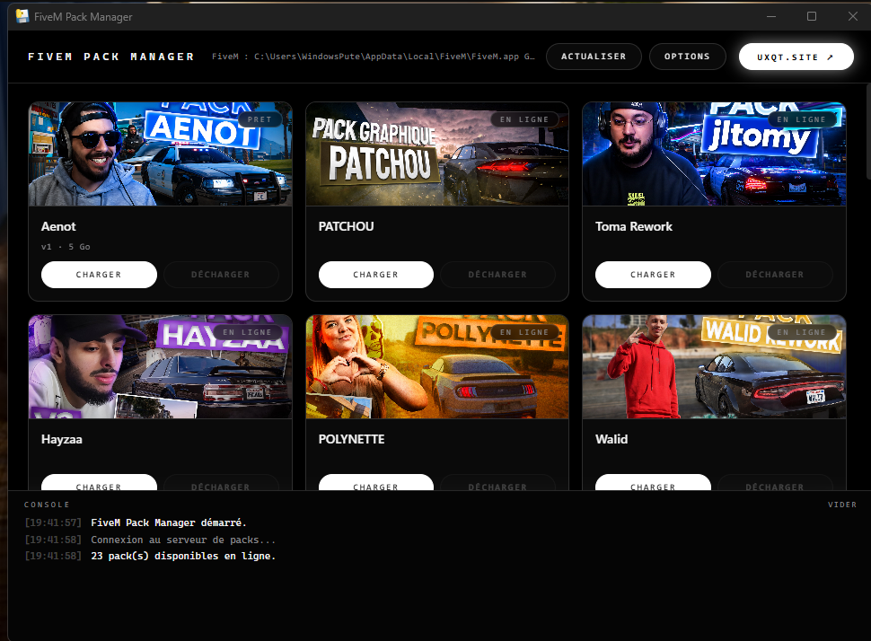

QuantV, NVE, ReShade, ENB. Modium télécharge le pack, comprend comment il est rangé, envoie chaque fichier au bon endroit — et sait tout remettre comme avant.

Installer un pack à la main, c'est deviner où va chaque dossier, écraser des fichiers sans savoir lesquels, et espérer pouvoir revenir en arrière.
Chaque créateur range son pack à sa façon. Modium parcourt tout l'arbre et
répartit : citizen, mods et plugins vers
FiveM, le contenu GTA5 vers le jeu, les .rpf au bon
sous-chemin.
Chaque fichier écrasé est sauvegardé avant. Le déchargement retire exactement ce qui a été posé et restaure les originaux. Si l'installation échoue en cours de route, tout est annulé automatiquement.
Une coupure réseau sur un pack de 10 Go ne fait plus tout recommencer. Modium reprend là où il s'était arrêté. Et un bouton Annuler, qui nettoie derrière lui.
Colle un lien Google Drive, Mega ou direct. Les dossiers Drive sont reconstruits fichier par fichier, les archives qu'ils contiennent extraites toutes seules.
Refuse de travailler si le jeu tourne. Vérifie l'espace disque sur chaque disque. N'écrit jamais hors des dossiers cibles. Refuse de se désinstaller tant qu'un pack est chargé.
zip, rar, 7z, volumes découpés en .part1, .r00 ou
.001, archives imbriquées. Extraction native quand c'est possible,
WinRAR ou 7-Zip sinon.
Les packs disponibles s'affichent avec leur image et leur taille. Rien à configurer : les dossiers FiveM et GTA V sont détectés tout seuls.
Téléchargement, extraction, analyse de la structure, copie au bon endroit, sauvegarde de tout ce qui est écrasé. La console décrit chaque action en direct.
C'est tout. Le pack est installé comme si tu l'avais fait à la main, mais sans les erreurs.
Modium retire ce qu'il avait posé, remet tes fichiers d'origine et nettoie les dossiers vides. Le jeu revient exactement dans son état d'avant.
Non. Ça veut dire que l'application n'est pas signée par un certificat payant,
ce qui coûte plusieurs centaines d'euros par an. Clique sur
Informations complémentaires puis Exécuter quand même.
Si ça te dérange, tout le code source est public : tu peux le lire, et même compiler l'application toi-même.
Modium sauvegarde chaque fichier avant de l'écraser et garde la trace exacte de ce qu'il a installé. Un clic sur Décharger remet tout en place. Si une installation échoue en cours de route, elle est annulée automatiquement.
Le désinstalleur refuse même de partir tant qu'un pack est chargé, pour ne pas emporter les sauvegardes de tes fichiers d'origine.
Non pour les packs en .zip. Pour les .rar, il faut
WinRAR ou 7-Zip sur le PC — ce sont des formats que Windows ne sait pas ouvrir
seul.
Oui. Dans Options → Mes packs, colle un lien Google Drive (fichier
ou dossier entier), Mega, ou n'importe quel lien direct vers une archive. Tu peux
aussi héberger ta propre liste de packs et pointer Modium dessus.
Parce que les jeux verrouillent leurs fichiers. Modium refuse de travailler tant qu'ils tournent : sinon l'installation s'arrêterait au milieu, en laissant le jeu dans un état incohérent.